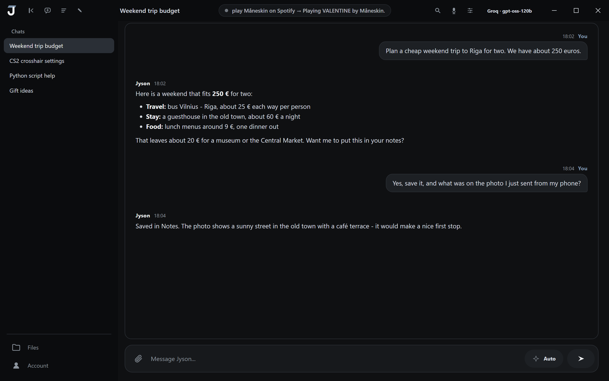

Voice and chat
Say the wake word and give a command, or open the window for a longer conversation. Past chats and long-term memory are kept apart, and you can clear either.
AI assistant for Windows
An assistant you can talk to, a notch called Mochi, a taskbar that's yours and clips of the last 30 seconds. Try it right here.
Jyson is a Windows PC app. Open this page on your PC to download it.
Point at the notch, then turn the wheel over it: the player, the last answer, the Command Center. Move away and it closes.
Tap the notch to peek, tap again for the player. "Wheel down" goes to the next layer. Tap anywhere else to close it.
This is a simulation in your browser. Jyson itself runs on Windows 11.
Chats stay chats. Quick commands like "open Discord" go to the activity list instead, so your chat history doesn't fill up with one-liners.

Say the wake word and give a command, or open the window for a longer conversation. Past chats and long-term memory are kept apart, and you can clear either.
Opens and closes apps, changes volume, sets timers, controls Spotify, and works with your windows and files. Risky actions ask first.
A small island at the top of the screen: the song with its controls, a timer, the answer to a command. Hover it for more, scroll it for quick settings. Works on every monitor.
At the bottom or at the top around Mochi. Liquid glass, Frosted, Neon or clear looks, and dozens of widgets you drag onto it. Switch back to the Windows one any time.
A big clock in thin capitals, today's plan, a calendar with your own photo. Drag them where you want them.
One key saves the last 30 seconds of your game, with your voice and the game sound. Long recordings too. All on your PC.
Use a cloud provider with your own key, or run a model on your own PC. Local models download only if you choose them.
An Android app that sends files and commands to your PC. It comes in a later version.
Paid plans aren't on sale yet - we're finishing the paperwork to sell them. Until prices are announced, the free trial gives you everything the paid version has: every feature, no card, and it ends by itself.
Every feature. Stop any time on your account page.
Every feature for a year - about a third off the monthly price.
For the first 100 people, until 31 December.
Start on Free, or take a free 14-day trial from your account page - every feature, no card, and it ends by itself.
Only signed-in Jyson accounts can post a review. We don't check whether the reviewer installed the app. The newest reviews are shown first, and low ratings are not hidden. See something wrong? Report a review.
Loading reviews…
Questions, ideas and bug reports go to Jyson's Discord server. The window below is Discord's own and loads only when you ask for it.
Loads discord.com: Discord's own terms and cookies apply.
Free, with a 14-day trial of everything from your account page. Uninstall from Windows Settings like any other app.